SW Chapter 5
Spring 2026
By the end of this chapter, you will be able to:
We want to learn about the slope of the population regression line. We have data from a sample, so there is sampling uncertainty.
Recall that \(\hat\beta_1\) is a random variable with its own sampling distribution.
Recall: under the Least Squares Assumptions, for \(n\) large, \(\hat{\beta}_1\) is approximately distributed:
Note
\[ \hat{\beta}_1 \sim N\left(\beta_1,\;\frac{\sigma_v^2}{n(\sigma_X^2)^2}\right),\quad \text{where } v_i=(X_i-\mu_X)u_i \]
Note: We won’t compute variances by hand, but the intuition is useful.
Key insight:
Null hypothesis and two-sided alternative:
\[ H_0: \beta_1 = \beta_{1,0}\quad \text{vs}\quad H_1: \beta_1 \neq \beta_{1,0} \]
Null hypothesis and one-sided alternative:
\[ H_0: \beta_1 = \beta_{1,0}\quad \text{vs}\quad H_1: \beta_1 < \beta_{1,0} \]
where \(\beta_{1,0}\) is the hypothesized value of \(\beta_1\) under the null (usually 0).
General formula for any hypothesis test:
\[ t = \frac{\text{estimator} - \text{hypothesized value}}{SE(\text{estimator})} \]
For testing \(\beta_1\):
\[ t = \frac{\hat{\beta}_1-\beta_{1,0}}{SE(\hat{\beta}_1)} \]
Construct your \(t\)-statistic:
\[ t = \frac{\hat{\beta}_1-\beta_{1,0}}{SE(\hat{\beta}_1)} \]
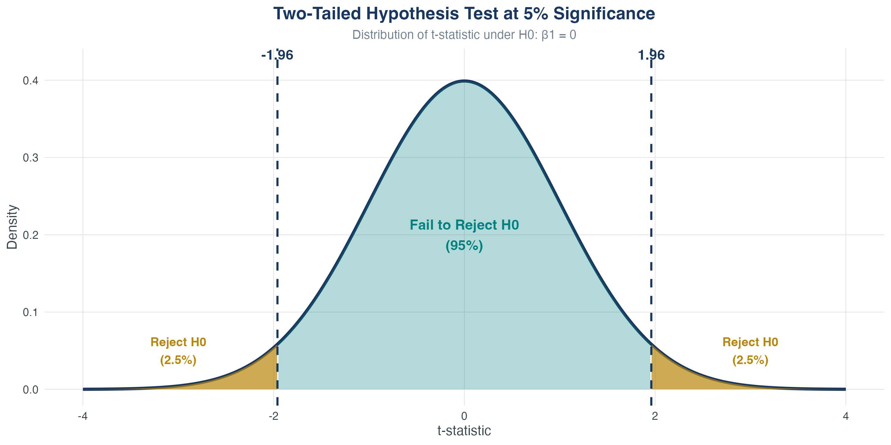
Reject \(H_0\) at significance level \(\alpha\) if:
Two-tailed: \(|t| > c_{\alpha/2}\)
One-tailed (upper): \(t > c_{\alpha}\)
One-tailed (lower): \(t < -c_{\alpha}\)
In practice, almost always two-tailed tests
Common critical values:
| Level | \(\alpha\) | \(c_{\alpha/2}\) |
|---|---|---|
| 1% | 0.01 | 2.58 |
| 5% | 0.05 | 1.96 |
| 10% | 0.10 | 1.645 |
Rejection regions for one- and two-sided tests
Reject \(H_0\) at significance level \(\alpha\) if:
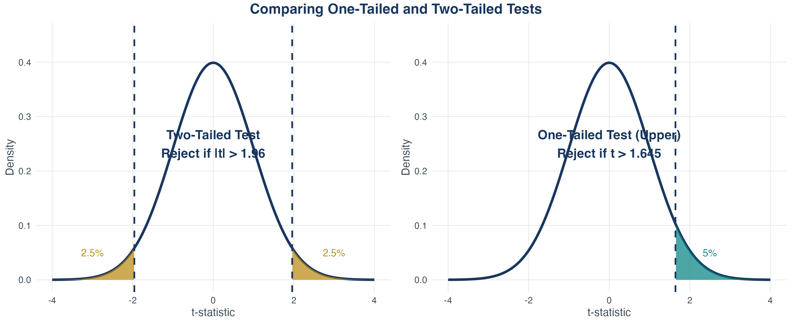
Which to use?
| Significance level \(\alpha\) | Two-tailed \(c_{\alpha/2}\) | One-tailed \(c_{\alpha}\) |
|---|---|---|
| 10% | 1.645 | 1.28 |
| 5% | 1.96 | 1.645 |
| 1% | 2.58 | 2.33 |
Rule of thumb: For two-tailed tests at 5%, reject if \(|t| > 2\).
Question
You estimate \(\hat\beta_1 = 3.5\) with \(\operatorname{SE}(\hat\beta_1) = 1.2\). Test \(H_0: \beta_1 = 0\) vs \(H_1: \beta_1 \neq 0\) at 5% level.
Answer
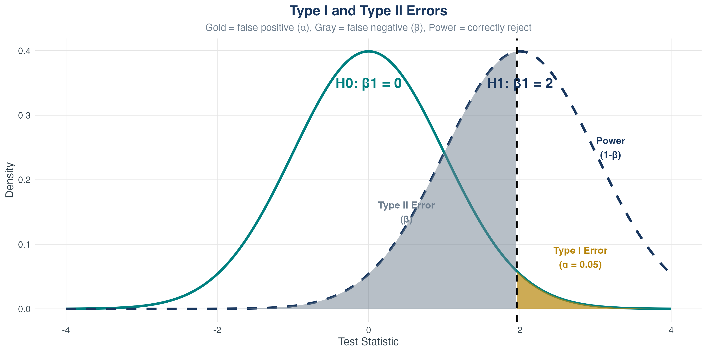
Type I and Type II errors
Consider the following scenarios. For each, decide whether it is a Type I error, a Type II error, or neither:
Answers
Why \(\alpha = 0.05\) is conventional
The tradeoff
We typically fix \(\alpha\) and try to increase power by increasing \(n\).
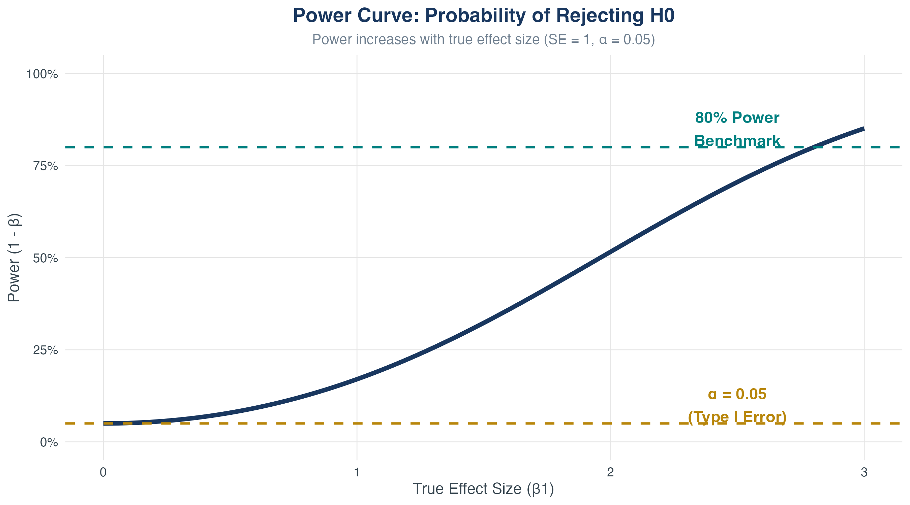
Power increases with:
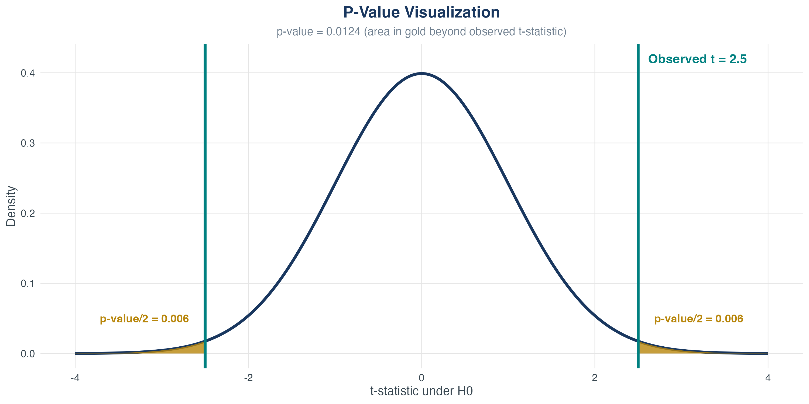
\(p\)-value interpretation
Testing \(H_0: \beta_1 = 0\)
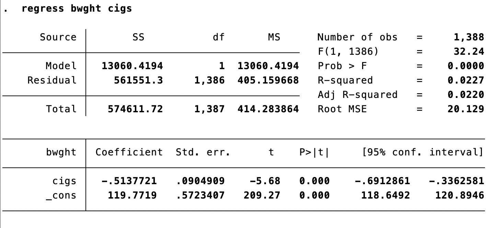
Stata output automatically shows:
Decision rule using \(p\)-value
What if we want to test a different null value?
Suppose we hypothesize that an extra year of education increases wage by exactly $3/hour:
\[ H_0: \beta_1 = 3 \quad \text{vs} \quad H_1: \beta_1 \neq 3. \]
Modified \(t\)-statistic:
\[ t = \frac{\hat\beta_1 - 3}{\operatorname{SE}(\hat\beta_1)}. \]
Example
Critical distinction
Statistical significance \(\neq\) economic significance.
Scenario 1: Statistically significant but economically trivial
Scenario 2: Economically important but statistically insignificant
Takeaway: Always examine both statistical significance and magnitude.
Is mother’s education associated with birthweight?
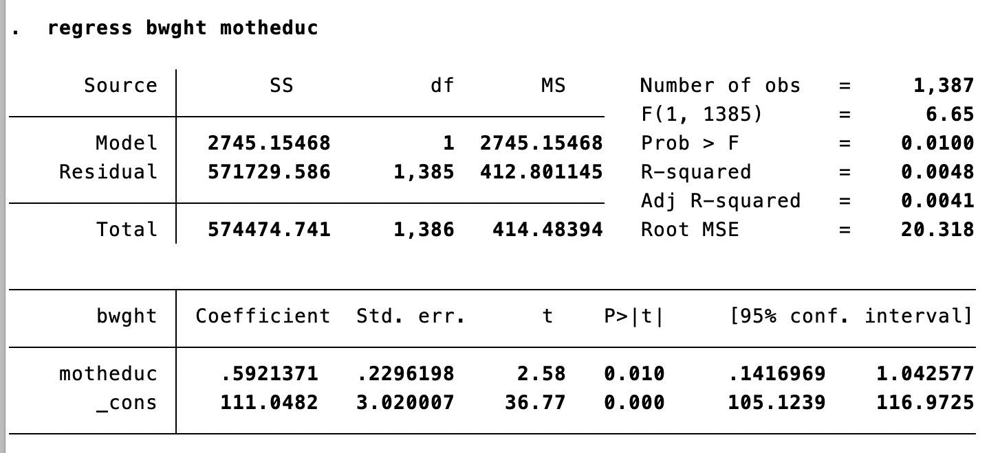
\[H_0: \beta_1 = a\] \[H_1: \beta_1 \neq a\]
Adjust the \(t\)-statistic
\[ t = \frac{\hat{\beta}_1 - a}{SE(\hat{\beta}_1)} \]
95% Confidence Interval
A random interval that contains the true parameter 95% of the time in repeated samples.
Two equivalent interpretations:
Since for large samples,
\[ t = \frac{\hat\beta_1 - \beta_1}{\operatorname{SE}(\hat\beta_1)} \sim N(0,1) \]
\[ P\left( -1.96 < \frac{\hat\beta_1 - \beta_1}{\operatorname{SE}(\hat\beta_1)} < 1.96 \right) = 0.95. \]
Rearranging,
\[ P\left( \hat\beta_1 - 1.96\cdot \operatorname{SE}(\hat\beta_1) < \beta_1 < \hat\beta_1 + 1.96 \cdot \operatorname{SE}(\hat\beta_1) \right) = 0.95. \]
95% Confidence Interval Formula
\[ \hat\beta_1 \pm 1.96 \cdot \operatorname{SE}(\hat\beta_1). \]
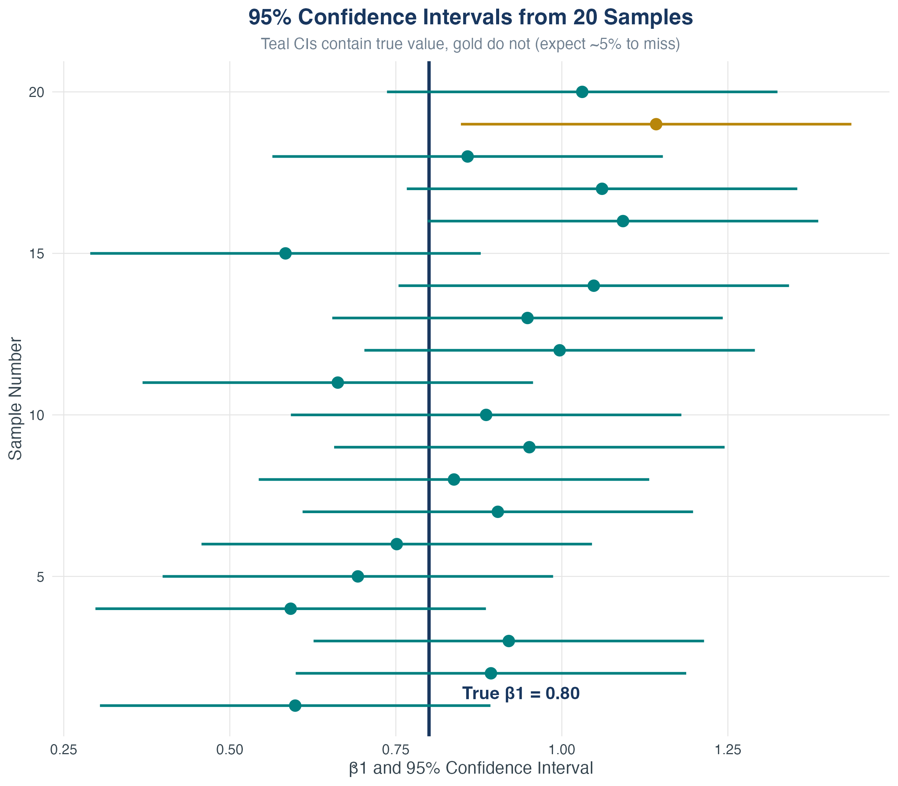
Many repeated 95% confidence intervals
General formula
\[ \hat\beta_1 \pm c_{\alpha/2} \cdot \operatorname{SE}(\hat\beta_1). \]
Common choices
| Confidence level | \(\alpha\) | Critical value \(c_{\alpha/2}\) |
|---|---|---|
| 90% | 0.10 | 1.645 |
| 95% | 0.05 | 1.96 |
| 99% | 0.01 | 2.58 |
Tradeoff
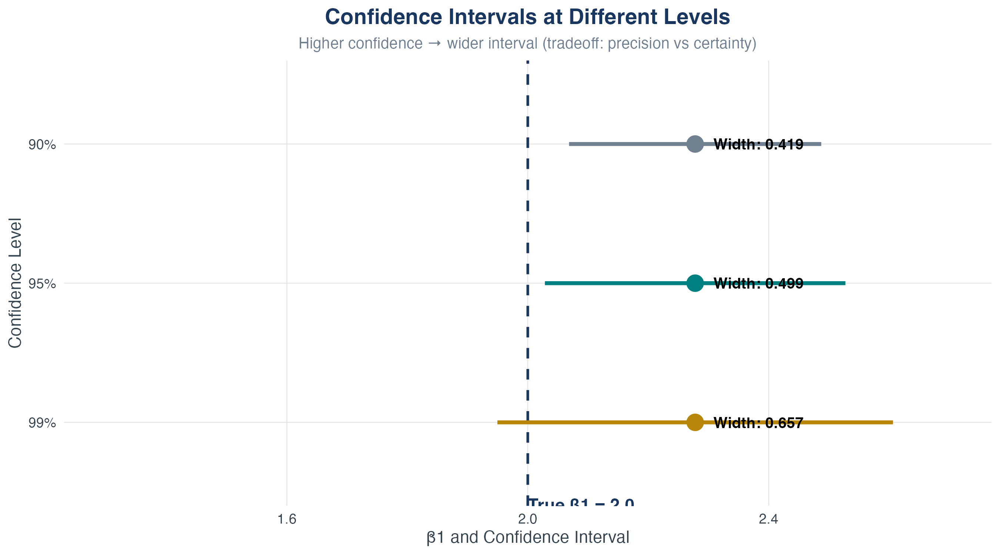
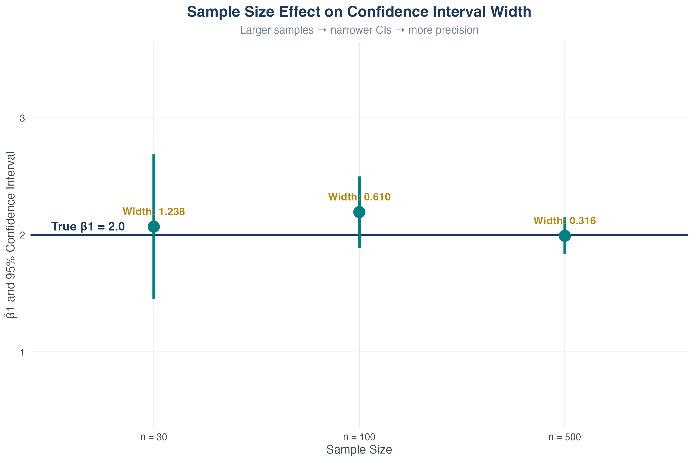
Key insight: SE shrinks as \(n\) increases, making CIs narrower and inference more precise.
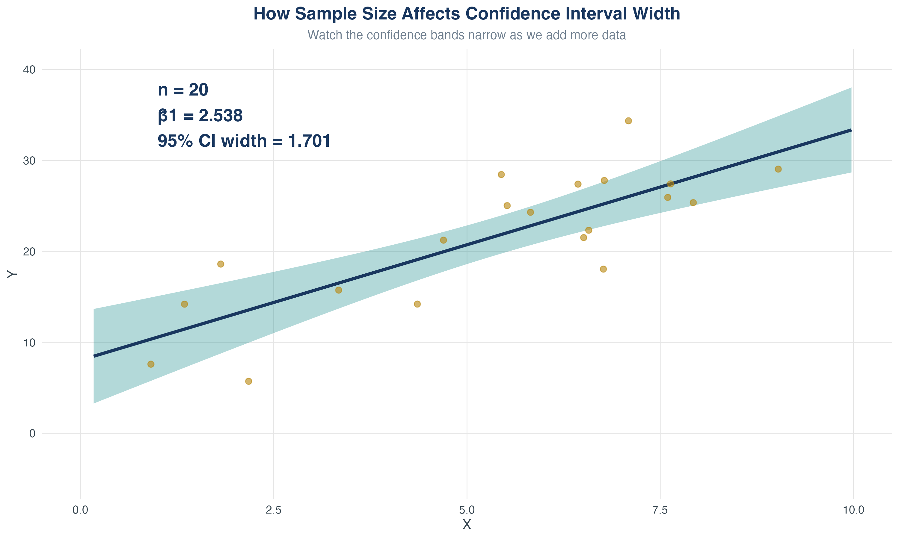
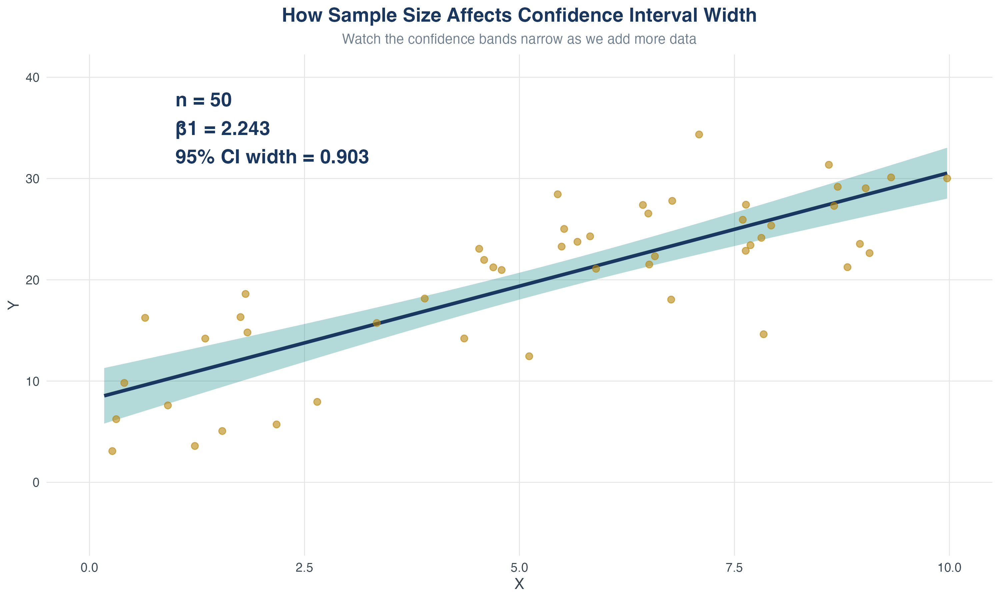
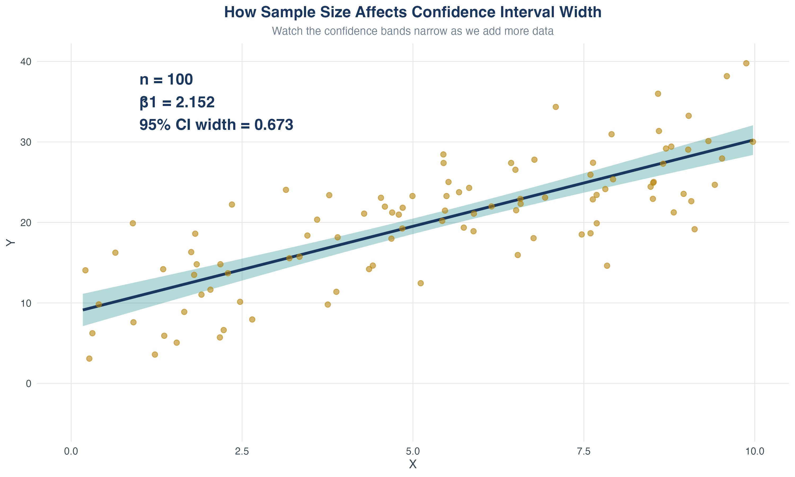
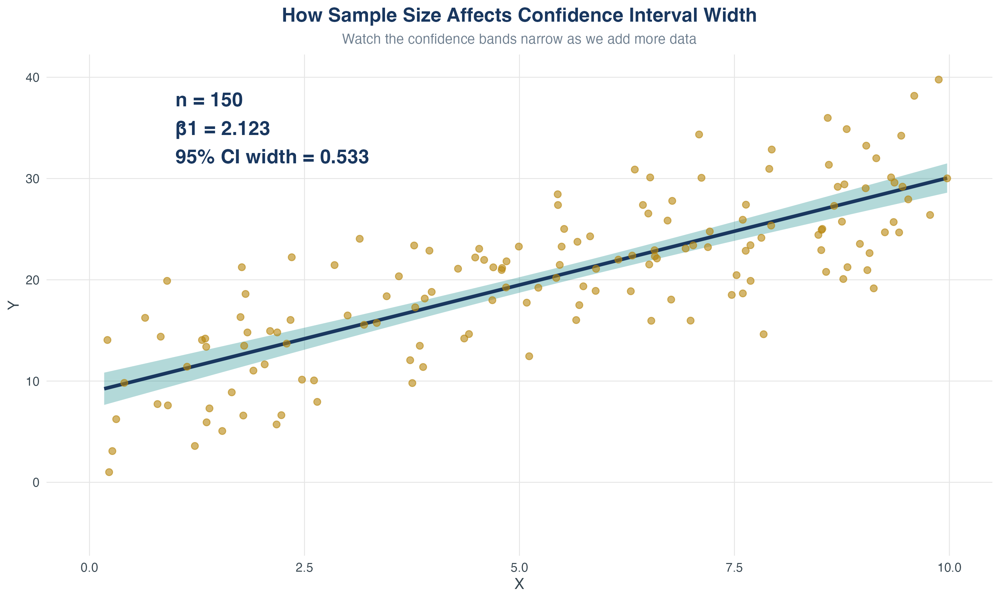
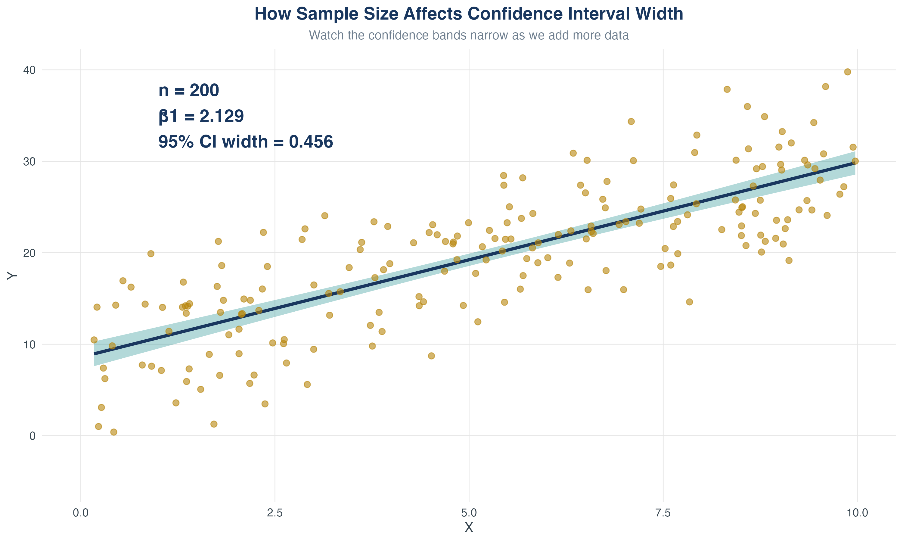
As sample size increases, the confidence interval shrinks.
Interpretation
Key relationship
Example
Takeaway: CIs provide more information than hypothesis tests—they show a range of plausible values.
Often, our regressor takes only two values:
These are called binary variables, dummy variables, or indicator variables.
Terminology
Gender is not binary, but it is recorded as binary in many datasets—data availability shapes our understanding of the world.
Population model: \(Y_i = \beta_0 + \beta_1 X_i + u_i\)
When \(X_i=0\):
\(Y_i = \beta_0 + \beta_1 * 0+ u_i\)
\(Y_i = \beta_0 + u_i\)
\(E[Y_i\mid X_i=0]=E[\beta_0 + u_i]=E[\beta_0] + E[u_i]= \beta_0\)
When \(X_i=1\):
\(Y_i = \beta_0 + \beta_1 + u_i\)
\(Y_i = \beta_0 + \beta_1 * 1+ u_i\)
\(Y_i = \beta_0 + \beta_1 + u_i\)
\(E[Y_i\mid X_i=1]=E[\beta_0 + \beta_1 + u_i]=E[\beta_0] + E[\beta_1] + E[u_i]= \beta_0 + \beta_1\)
Therefore:
Note
\[ \beta_1 = E(Y_i\mid X_i=1) - E(Y_i\mid X_i=0) \]
So \(\beta_1\) is the population difference in group means.
Is sex associated with birthweight?
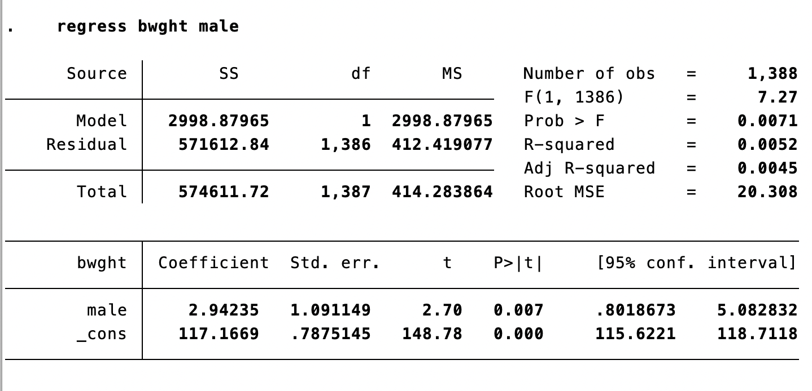
Is sex associated with birthweight?
\[\hat{bwght} = 117.17 + 2.94\,male\]
If \(var(u\mid X=x)\) is constant, \(u\) is homoskedastic.
Otherwise, \(u\) is heteroskedastic.
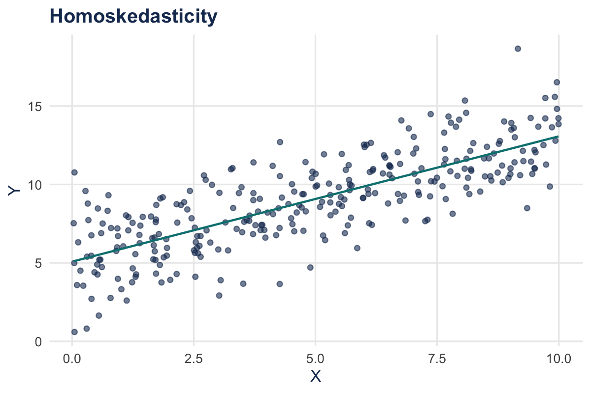
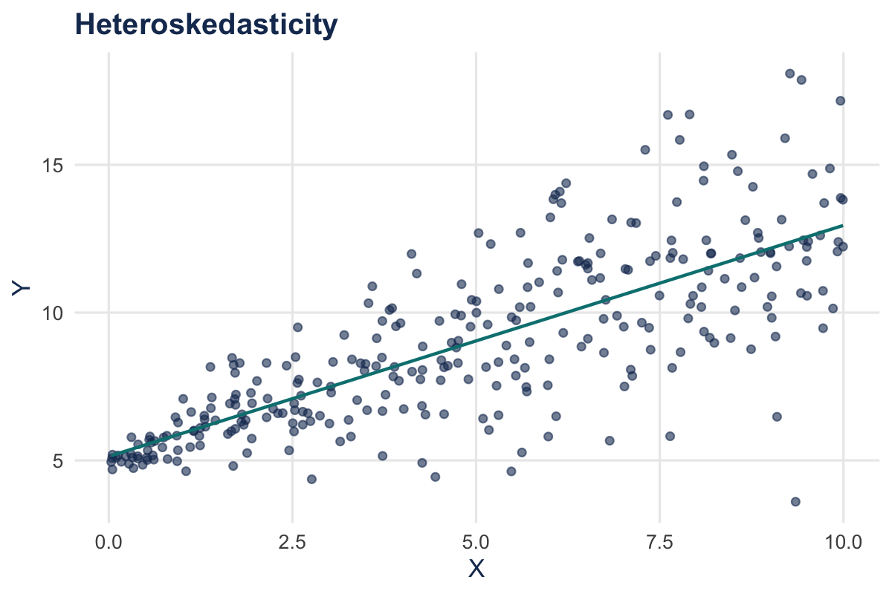
Recall the least squares assumptions:
Heteroskedasticity concerns \(var(u\mid X=x)\).
Because we did not assume homoskedasticity, we have implicitly allowed heteroskedasticity.
Heteroskedasticity does not affect point estimates of \(\beta_1\).
But it does affect your standard errors.
Homoskedastic-only standard errors are unbiased only under homoskedasticity. We adjust using heteroskedasticity-robust standard errors.
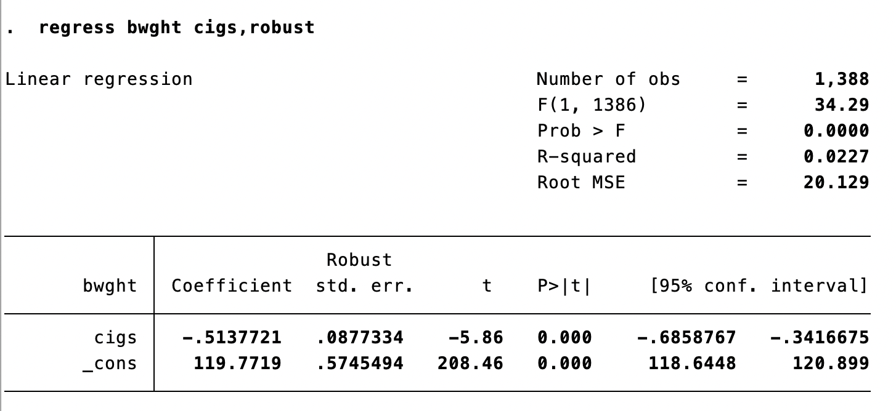
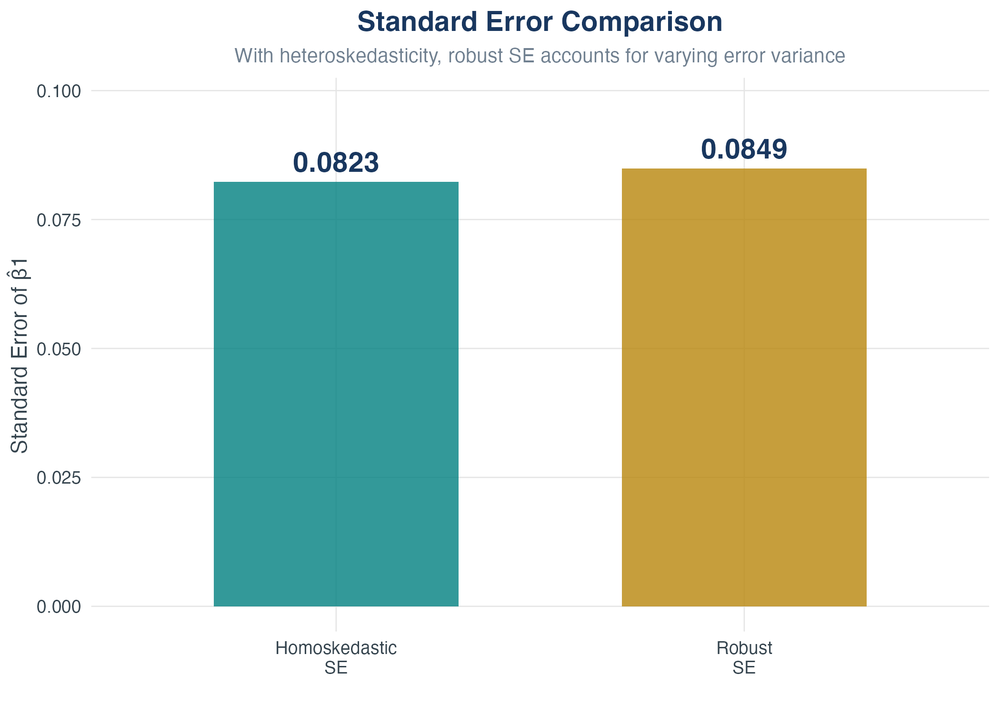
| Situation | Homoskedastic SE | Robust SE |
|---|---|---|
| Errors are homoskedastic | Correct | Correct |
| Errors are heteroskedastic | Wrong | Correct |
Always use robust standard errors.
No downside if errors are homoskedastic, protects you if they’re not.
Consider our three LS assumptions (needed for unbiasedness):
Plus one more:
Under these four extended LS assumptions, \(\hat{\beta}_1\) has the smallest variance among all linear estimators.
This is the Gauss–Markov Theorem.
Under GM, OLS estimators are BLUE:
In most applied regression analysis, we use OLS—so that is what we will do, too.
Key ideas to remember:
ECON3500 | Hypothesis Tests and Confidence Intervals